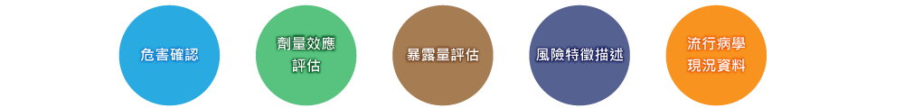
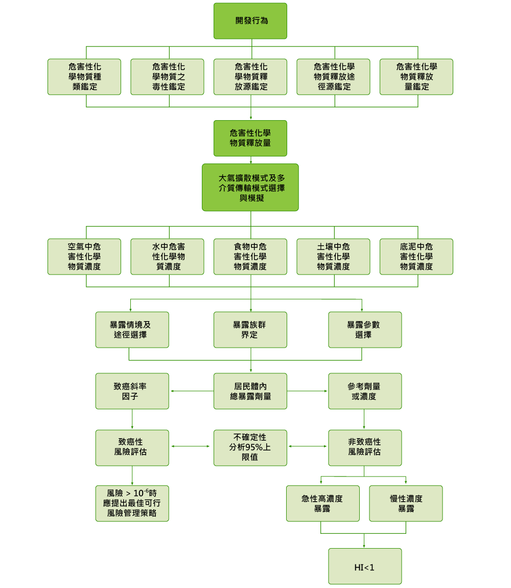

健 康 風 險 評 估
近年來國人越來越重視開發計畫對健康的影響，環境部已於民國99年4月9日公告「健康風險評估技術規範」，並於民國100年10月7日修訂「開發行為環境影響評估作業準則」規定開發行為可能運作或運作時衍生危害性化學物質者，開發單位應依健康風險評估技術規範進行健康風險評估，並將其納入說明書或評估書初稿。完整之健康風險評估計畫包括：

因此未來運作或可能衍生危害性化學物質之開發計畫，必須辦理健康風險評估。本公司具有相當豐富的健康風險評估計畫之執行經驗，曾辦理「新竹科學工業園區龍潭基地健康風險追蹤管理計畫」、「六輕相關計畫之特定有害空氣污染物所致健康風險評估計畫」、「南部科學工業園區（台南園區）健康風險評估計畫」、「台南縣威致鋼鐵官田廠擴建環評之健康風險評估工作」、環境部「固定污染源有害性揮發性有機物排放調查及健康風險評估計畫」、「大湳淨水廠使用液氯量化風險評估計畫」等計畫。並隨時掌握健康風險評估相關訊息，對於健康風險評估相關法令規範、評估技術、調查分析技術以及追蹤管理作業皆十分熟悉。

主 要 實 績
- 新竹科學園區寶山二期擴建環境影響評估暨健康風險評估專業服務工作
- 林口發電廠燃煤機組健康風險評估（陽明大學）
- 仁大工業區污染減量及風險改善計畫
- 六輕相關計畫之特定有害空氣污染物所致健康風險評估（107-109年度報告）
- 台橡高雄廠污染物丁二烯及苯風險評估作業
- 107年臺中市后里區、西屯區、大雅區及港區空氣污染物健康風險調查計畫
- 106年度六輕相關計畫之特定有害空氣污染物所致健康風險評估
- 六輕四期擴建計畫環差健康風險模擬工作
- 曄揚公司固污許可健康風險模擬工作
- 新竹市垃圾資源回收廠健康風險評估工作
- 新竹科學工業園區（寶山用地）擴建計畫實質計畫－環評有關空品模擬及健康風險評估
- 南科台南園區開發調整辦理環評作業計畫-空品模擬及健康風險評估報告
- 長春石化苗栗廠健康風險暨臭味評估
- 彰化縣打鐵厝南北基地產業園區環說及健康風險評估
- 台塑桃園儲運站健康風險評估計畫
- 105年六輕相關計畫之特定有害空氣污染物所致健康風險評估計畫
- 台南園區及高雄園區健康風險評估計畫
- 中科臺中園區一、二期健康風險評估作業
- 塑化氫化石油樹脂廠環差健康風險評估初步評估工作
- 南部科學工業園區健康風險評估
- 六輕南亞環差健康風險評估初步評估工作
- 仁大工業區鄰近區域居民健康風險評估計畫（排放量推估及模式模擬）
- 台塑六輕四期健康風險評估
- 六輕相關計畫之特定有害空氣污染物所致健康風險評估計畫 （瞭解詳情）
- 新竹科學工業園區龍潭基地健康風險追蹤管理計畫 （瞭解詳情）
- 台南縣威致鋼鐵官田廠擴建環評之健康風險評估工作 （瞭解詳情）
- 南部科學工業園區(台南園區)健康風險評估計畫 （瞭解詳情）
- 大湳淨水廠使用液氯量化風險評估計畫 （瞭解詳情）